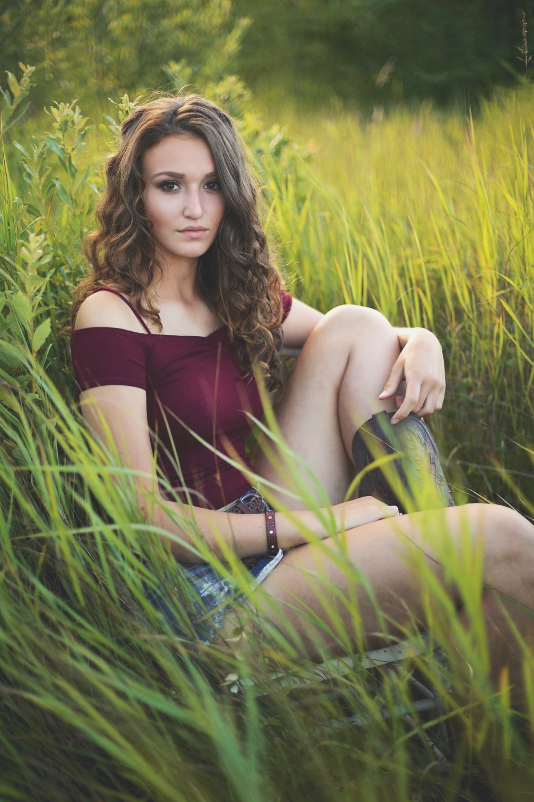

| Family | Education | Travel | Work | Anna's Homepage |
|---|---|---|---|
 |
Anna Young |
Hi! I'm Anna, an 18 year old student at the University of Maine with an unconditional love of chinese food. Originally, I'm from Ellsowrth Maine, but I love being a Black Bear and living in Orono. Most of the time you'll be able to find me hiking somewhere in Acadia National Park, playing with my dog, or reading. I also love to be active, and play volleyball, and basketball whenever I get the chance. Click around to find out more about me! |
|